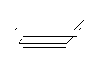
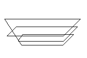

|
Closed Property |
Specifies whether the 3D polyline, lightweight polyline, lofted surface, polyline, or spline is open or closed.
Signature
object.Closed
object
3DPolyline , LightweightPolyline, LoftedSurface, Polyline, Spline
The objects this property applies to.
Closed
Boolean; read-only for spline objects; read-write for all others
TRUE: The object is closed.
FALSE: The object is open (default).
 |
 |
| An open 3D polyline | A closed 3D polyline |
A lofted surface is closed if the cross-section curves that determine its profile are closed. For instance, if an arc is used in the lofting profile, the resulting surface is open. If closed curves such as circles are used for lofting, the resulting surface is closed.
| Comments? |